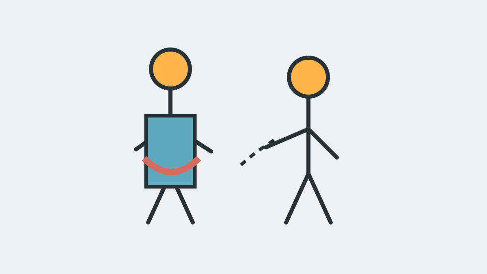
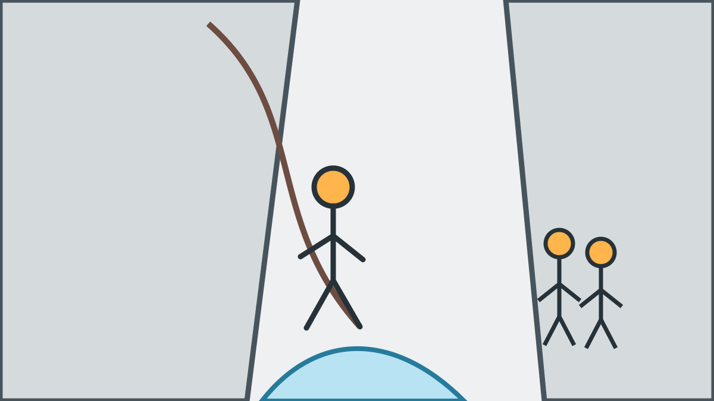
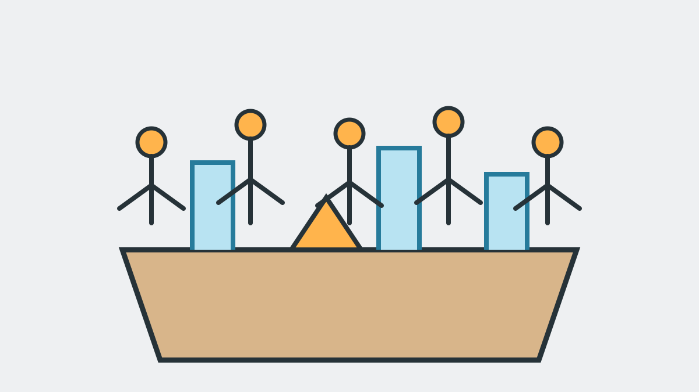

So läuft eure private Canyoning-Tour ab
Ab dem Wanderparkplatz Gütle ist euer Canyoning-Tag als Sorglos-Paket organisiert und genau auf JGA-Bedürfnisse zugeschnitten. Ihr bringt Badekleidung, Handtuch, Wechselkleidung und ev. notwendige Medikamente mit. Ausrüstung, Transfer, Einweisung, Führung, Fotos, Videos und der Ausklang danach sind organisiert.
Vor der Tour: direkte Abstimmung
Nach der Buchung stimmen wir Treffzeit, Teilnehmerliste sowie Körper- und Schuhgrößen mit der buchenden Person ab. Änderungen zu Wetter oder Ablauf teilen wir im direkten Kontakt so früh wie möglich mit. Sicherheitsrelevante gesundheitliche Informationen können betroffene Teilnehmer vertraulich persönlich an uns senden.
1. Ankommen am Wanderparkplatz Gütle
Wir treffen uns zur individuell vereinbarten Uhrzeit am Wanderparkplatz Gütle in Dornbirn, normalerweise gegen 9:00 Uhr. Bitte erscheint pünktlich. Früher als vereinbart ist nicht nötig.
2. Umziehen und vollständige Ausrüstung
Ihr zieht euch direkt am Treffpunkt um. Jeder Teilnehmer erhält passend zur Größe Neoprenanzug, Neoprensocken, Helm, Canyoning-Gurt und spezielle Canyoning-Schuhe. Technisches Seil- und Sicherheitsmaterial führen wir mit. Eure persönlichen Gegenstände bewahren wir während der Tour sicher auf.

3. Transfer zum Einstieg
Der Transfer vom Treffpunkt zum Einstieg und später zurück ist Teil unserer Leistung. Ihr müsst ab eurer Ankunft am vereinbarten Treffpunkt keine weiteren Fahrten oder organisatorischen Schritte für die Canyoning-Tour planen.
4. Sicherheits-Einweisung
Vor dem Einstieg erklären wir Verhalten im Wasser, Zeichen und Kommandos, sichere Körperhaltung, Rutsch- und Sprungtechnik sowie den Ablauf beim Abseilen. Alle Teilnehmer müssen die Einweisung vollständig mitmachen. Sie ist auf Deutsch oder Englisch möglich.
5. Gemeinsam durch die Schlucht
In der Kobelache bewegt ihr euch je nach Tour gehend, abkletternd, schwimmend, rutschend und am Seil. Vor jeder technisch relevanten Stelle erklärt der Guide den Ablauf. Tempo und Varianten werden an Gruppe und aktuelle Bedingungen angepasst. Jeder Sprung ist freiwillig und kann umgangen werden. Bei längeren Touren machen wir eine Pause in der Mitte, wo ihr von uns außerdem eine Verpflegung (Snacks und Getränke) erhaltet.

6. Ausstieg, Rücktransfer und Umziehen
Nach dem Tour organisieren wir den Rückweg beziehungsweise Rücktransfer zum Treffpunkt. Dort gebt ihr die Leihausrüstung zurück und zieht euch um.
7. Snack, Getränke, Fotos und Videos
Nach dem Umziehen gibt es einen Snack sowie Bier, Radler oder Limo. Die während der Tour erstellten Fotos und Videos sind im Preis enthalten und werden über einen privaten Download-Link bereitgestellt.

Wie lange dauert der gesamte Ablauf?
Die auf den Tourseiten genannte Gesamtdauer umfasst Ausrüstung, Einweisung, Transfers, Schlucht und Rückweg.